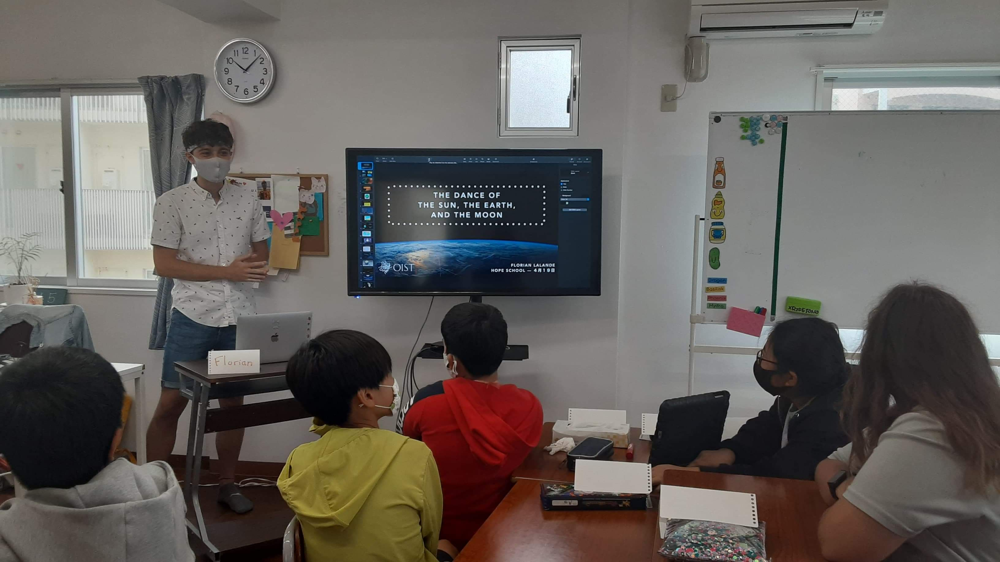
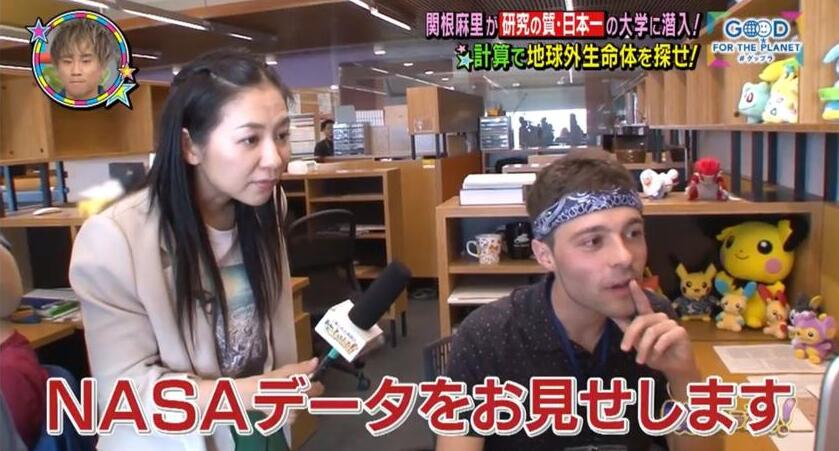

Science Communication and Outreach
in Okinawa and Japan
Because spreading knowledge with eager minds is invaluable
Outreach in Okinawan schools
I have given several presentations at the Hope Academy, in Okinawa. Having to adapt to
different age ranges from elementary school, to high school students, is a very
stimulating and rewarding exercise.

Okinawa Science Mentoring Program at OIST
During the Summer 2019, I volunteered to the OIST Okinawa Science Mentoring Program. During two months, I was tutoring two high school students for one day a week. I introduced some Python programming basics, until we could plot our own functions. After talking about the law of gravity of Newton, we even managed to produce a little simulation of the Solar system in Python!
Japanese TV Program: 笑ってコラえて
In 2023, my research was featured in the popular Japanese TV Program 笑ってコラえて (waratte
koraete). I talked about how to use the numerical data imputation algorithms I developed
to estimate the unknown mass for exoplanets 🪐
